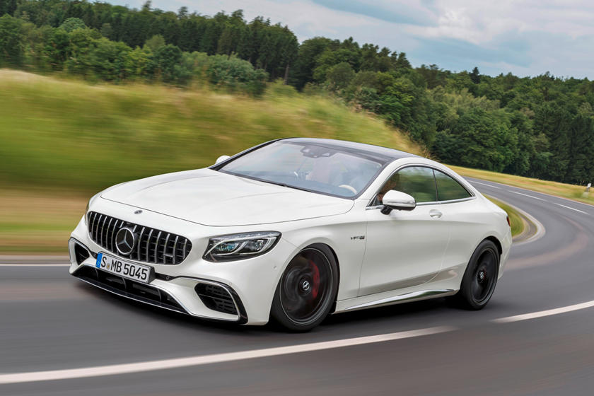
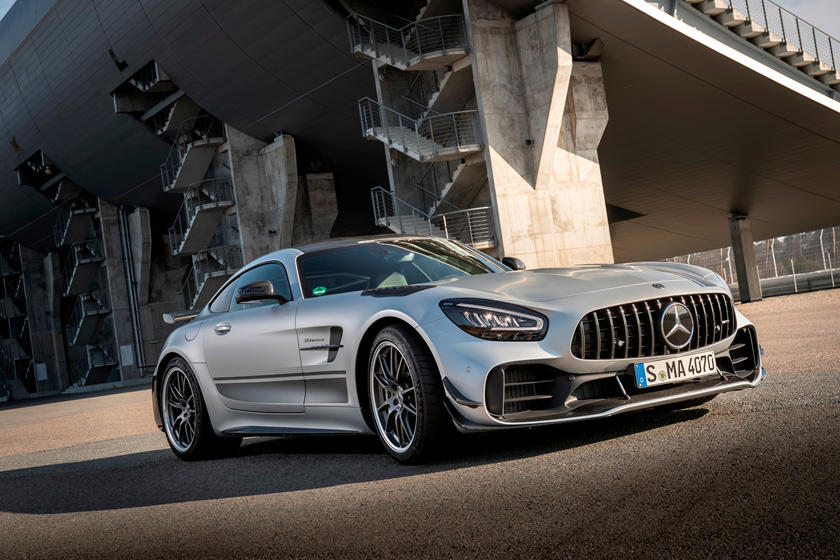
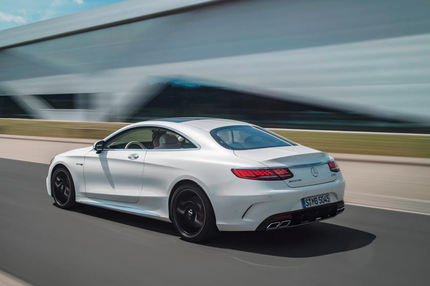
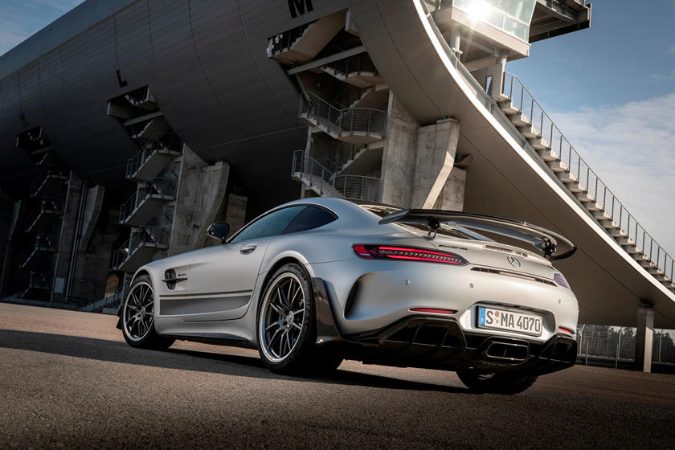

| S63 Coupe (2019) | AMG GT R (2020) |
|---|---|
|  |  |
|  |  |
Mercedes-Benz (German: [mɛɐ̯ˈtseːdəsˌbɛnts, -dɛs-])[6][7] is both a German automotive marque and, from late 2019 onwards, a subsidiary (Mercedes-Benz AG) of Daimler AG.[1] Mercedes-Benz is known for producing luxury vehicles and commercial vehicles.[note 2] The headquarters is in Stuttgart, Baden-Württemberg. The name first appeared in 1926 under Daimler-Benz. In 2018, Mercedes-Benz was the largest seller of premium vehicles in the world, having sold 2.31 million passenger cars.[8]
The company's origins come from Daimler-Motoren-Gesellschaft's 1901 Mercedes and Karl Benz's 1886 Benz Patent-Motorwagen, which is widely regarded as the first internal combustion engine in a self-propelled automobile. The fuel was not gasoline, it was a much more volatile petroleum spirit with several names including ligrane/ligrain/ligroin. This was used as a degreaser, spot remover, paint thinner, etc. and was so quick to burn or explode, it was not stored inside. The slogan for the brand is "the best or nothing".[9]
Mercedes-Benz traces its origins to Karl Benz's creation of the first internal combustion engine in a car, the Benz Patent Motorwagen, financed by Bertha Benz's dowry[10] and patented in January 1886,[11] and Gottlieb Daimler and engineer Wilhelm Maybach's conversion of a stagecoach by the addition of a petrol engine later that year. The Mercedes automobile was first marketed in 1901 by Daimler-Motoren-Gesellschaft (DMG).
Emil Jellinek, a European automobile entrepreneur who worked with DMG, created the trademark in 1902, naming the 1901 Mercedes 35 hp after his daughter Mercedes Jellinek. Jellinek was a businessman and marketing strategist who promoted "horseless" Daimler automobiles among the highest circles of society in his adopted home, which, at that time, was a meeting place for the "Haute Volée" of France and Europe, especially in winter. His customers included the Rothschild family and other well-known personalities. But Jellinek's plans went further: as early as 1901, he was selling Mercedes cars in the New World as well, including US billionaires Rockefeller, Astor, Morgan, and Taylor. At a race in Nice in 1899, Jellinek drove under the pseudonym "Monsieur Mercédès", a way of concealing the competitor's real name as was normal and very regularly done in those days. The race ranks as the hour of birth of the Mercedes-Benz brand. In 1901, the name "Mercedes" was registered by Daimler-Motoren-Gesellschaft (DMG) worldwide as a protected trademark.[12] The first Mercedes-Benz brand name vehicles were produced in 1926, following the merger of Karl Benz's and Gottlieb Daimler's companies into the Daimler-Benz company on 28 June of the same year.[11][13]
Gottlieb Daimler was born on 17 March 1834 in Schorndorf. After training as a gunsmith and working in France, he attended the Polytechnic School in Stuttgart from 1857 to 1859. After completing various technical activities in France and England, he started working as a draftsman in Geislingen in 1862. At the end of 1863, he was appointed workshop inspector in a machine tool factory in Reutlingen, where he met Wilhelm Maybach in 1865.[14]
Throughout the 1930s, Mercedes-Benz produced the 770 model, a car that was popular during Germany's Nazi period. Adolf Hitler was known to have driven these cars during his time in power, with bulletproof windshields.[15] Most of the surviving models have been sold at auctions to private buyers. One of them is currently on display at the War Museum in Ottawa, Ontario. The pontiff's Popemobile has often been sourced from Mercedes-Benz.[16] In 1944, 46,000 forced labourers were used in Daimler-Benz's factories to bolster Nazi war efforts. The company later paid $12 million in reparations to the labourers' families.[17] Mercedes-Benz has introduced many technological and safety innovations that later became common in other vehicles.[18] Mercedes-Benz is one of the best-known and established automotive brands in the world.
In November 2019, Daimler AG announced that Mercedes-Benz, up until that point a company marque, would be spun off into a separate wholly owned subsidiary called Mercedes-Benz AG. The new subsidiary would manage the Mercedes-Benz's car and van business. Mercedes-Benz-badged trucks and buses would be part of the Daimler Truck AG subsidiary.[1]
For information relating to the famous three-pointed star, see under the title Daimler-Motoren-Gesellschaft, including the merger into Daimler-Benz.